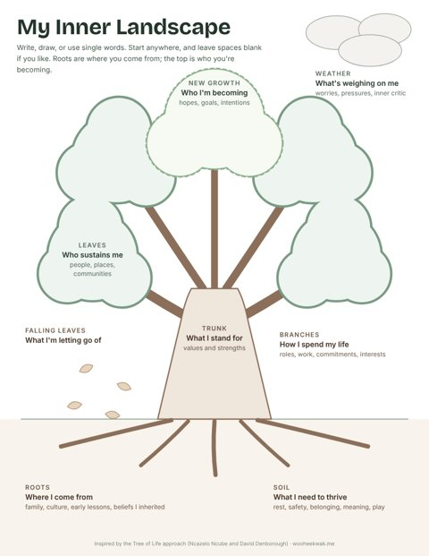
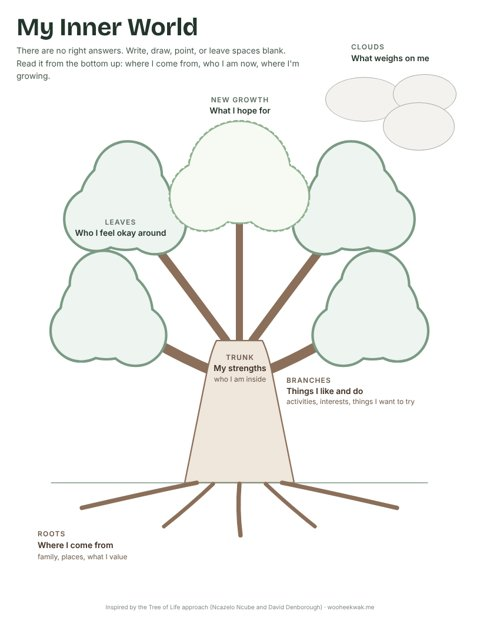

Therapy Resources · For Therapists
Tools for Therapists
Printable expressive arts worksheets, each with a facilitator guide, for counselors who want to invite clients into reflection beyond words. Free to print and use in your practice.
Looking for client handouts? Browse the psychoeducation library →
Expressive Arts & Reflection
Visual, hands-on exercises that help clients explore identity, values, and what's shaping their lives. Each one is a conversation starter, not an assessment.
-

Adults · 35 to 40 minutes
My Inner Landscape
A tree map for exploring where someone comes from, what they need, what they stand for, how they spend their life, who sustains them, what weighs on them, and who they're becoming. Especially useful for life transitions, burnout, and identity work.
- Roots
- Soil
- Trunk
- Branches
- Leaves
- New growth
- Weather
- Falling leaves
Draws on expressive arts, narrative practice, and ACT values work
-

Teens · 20 to 30 minutes
My Inner World
A gentle tree map for teens to share where they come from, their strengths, what they enjoy, who they feel okay around, what they hope for, and what's weighing on them. Designed to lower the spotlight for quiet or hesitant teens.
- Roots
- Trunk
- Branches
- Leaves
- New growth
- Clouds
Draws on expressive arts and narrative practice